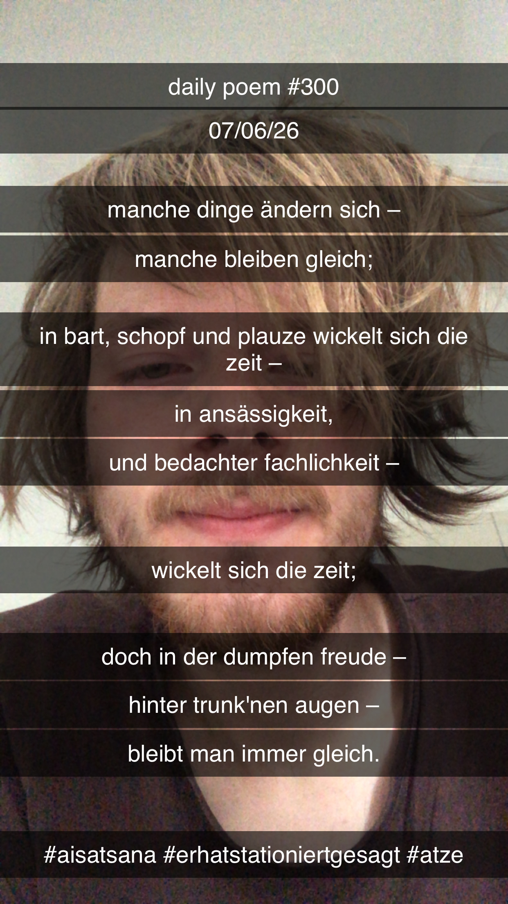

Manche Dinge ändern sich –
[300]Manche Dinge ändern sich –
Manche bleiben gleich;
In Bart, Schopf und Plauze wickelt sich die Zeit –
In Ansässigkeit,
Und Bedacht und Fachlichkeit –
Wickelt sich die Zeit;
Doch in der dumpfen Freude –
Hinter trunk'nen Augen –
Bleibt man immer gleich.
